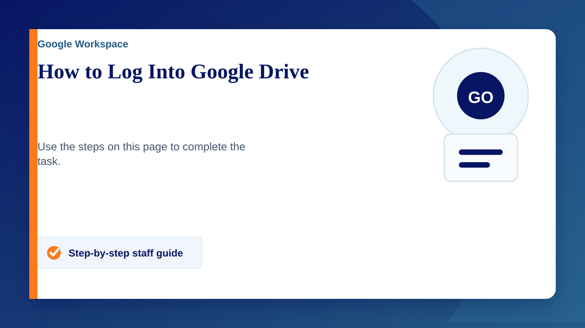
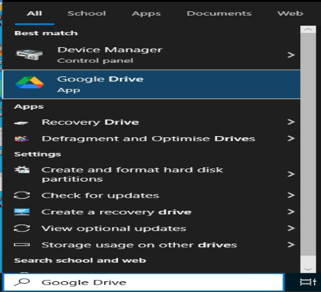
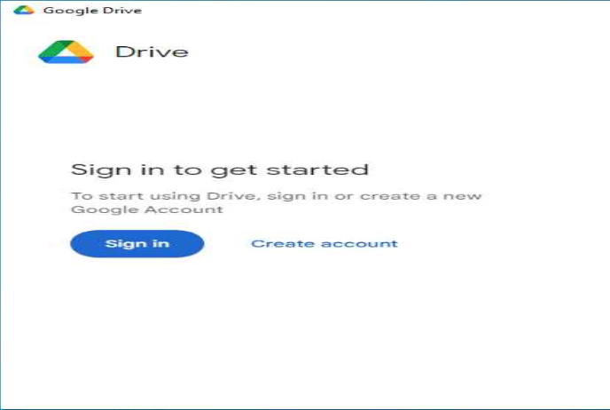
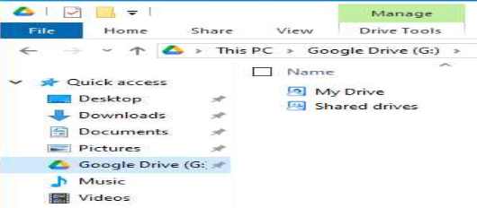

Google Drive is automatically installed on all school computers, if for any reason you do not have it please email support@claremontschool.co.uk
How to log into Google Drive
- Search for Google Drive using windows search function and open it
- Wait for Google Drive to pop up on screen and click Get Started
- Click Sign in
- Either log in or select your account if you have already previously logged in to chrome.
- Click Sign in
- Google Drive for Desktop will now be logged in
If it does not automatically pop back up then repeat step 1 - Click Next
- Click Next
- Select folders you want to back up or click Skip
- Repeat step 9
- Click Open Drive
- Google Drive will now appear in file explorer (yellow folder)
Work can now be saved directly to the Google drive from applications (word, photoshop, fusion etc)


